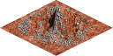

Mountains
While mountains are rare on Mars, the planet is also the site of
Olympus Mons, the highest known mountain within the Solar System
Movement in this type of terrain is difficult, but mountains
have good iron, magnesium and aluminium production, it will not
produce any food though. In battle, it will provide significant
advantages to defender, doubling its strength.

| Movement cost |
3 |
| Defence percentage |
100 |
| Resource |
Production |
| Iron |
4 |
| Magnesium |
4 |
| Aluminium |
4 |